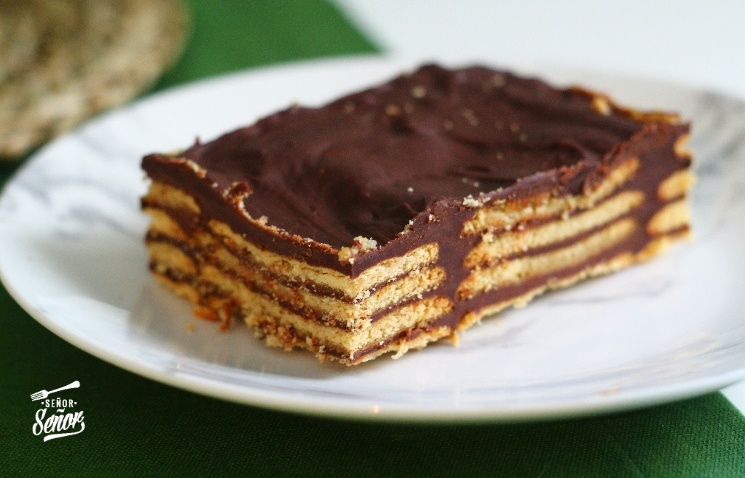
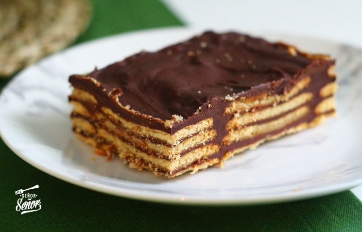

About My Small Business
It is a small business called "Fatima's Kitchen". I started selling cookies when I was 9 years old, now I am 14 years old and have expanded the dessert list. I have always sought to learn new methods to make desserts. On one occasion I had the opportunity to go to a class with my aunt and we learned how to use the pastry bag. I first started this business because I love making desserts and also my goal is to save to pay for some things I would like to buy and always have money saved.
 

Here are two links for more information: